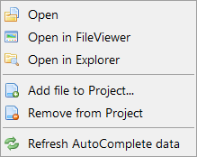

管理项目
该开发环境 IDE 具有轻松管理更大的项目的功能。这些功能是完全可选的。虽说不利用项目管理功能两样也可以创建、编译程序。然而，一旦一个程序由若干源代码和其他相关文件时（如一系列的代码文件等），使用此功能便可以简单的将它们在同一个项目中进行管理。
项目工程概述
一个工程项目允许管理多个源代码和其他相关文件，并可以通过工程工具进行统一的快速访问。即使有些文件没有在 IDE 中打开，IDE 依然会自动扫描项目中源代码文件及所包含资源。包括功能函数、常量、 变量等从整个工程项目中要使用到的内容。关闭该项目时，该工程管理功能会记住打开时的源文件状态，并在下一次重新打开工程时停在你上次工作的地方。
此外，一个工程项目会将编译器的所有设置保存在一个地方 （工程文件），甚至允许你管理每个项目的多个"编译目标"。编译目标是只是一整套的编译器选项。以此方式，相同的程序的不同版本，或者在一个项目中多个较小的程序可以容易地一次通过所有的编译。
编译一个项目从一个脚本或生成文件，开发环境 IDE 提供了编译脚本或 Makefile 命令，使你无需打开用户界面通过命令行选项来编译工程项目。请查看 命令行选项 command-line options 了解更多详情。
在项目中所有的文件名和路径都相对于项目文件存储，所以只要相对目录结构保持不变，可以将工程项目轻易移动到另一个位置。
项目菜单
新建项目
创建一个新的工程项目。如果有一个项目正被打开时将会关闭。并打开新建项目窗口，并将光标停在指定项目文件位置，来对项目配置。
打开项目
打开现有项目。如果有一个项目正被打开时将会关闭。工程项目中设定的随项目一起打开的代码文件等将会自动打开。
最近项目
此子菜单显示最近打开的项目文件的列表。点击选择其中一项将调用打开项目命令载入此工程项目。
关闭项目
</br13>关闭当前打开的工程项目。关闭并保存当前打开的工程项目及项目中所有被打开的代码文件并对其项目设置进行保存。
项目选项
打开项目选项窗口。查看了解更多项目信息。
添加项目文件
将当前处于活动状态的源代码添加到当前项目。属于工程项目的文件在文件面板上被标记一个">"符号。
移除项目文件
从当前项目中移除当前处于活动状态的代码文件。
打开项目目录
用系统中的文件管理器打开包含项目文件的文件夹。
项目选项窗口
项目选项窗口是项目的核心配置内容。常规项目设置，以及项目中的个别文件的设置可以在这里进行设定。

在 "项目选项" 页可以进行以下设置：
项目文件
显示项目文件的文件名。这只能在项目创建期间更改。
项目名称
项目的名称。此名称被显示在 IDE 的标题栏和"最近项目"菜单中。
注释
此字段允许向项目中添加一些注释。他们将显示在项目信息选项页中。
设置为默认项目
在每次启动 IDE，将加载该默认项目。只允许设置一个项目作为默认项目。如果没有默认项目，将加载在 IDE 关闭的最后一次项目。
关闭项目时关闭所有代码
如果启用，项目结束时，将自动关闭所有属于该项目的代码。
打开项目加载文件...
加载最后一次打开的所有代码
当打开该项目时，会再次打开该项目被关闭时其中打开的所有来代码。
加载项目所有代码
当打开该项目时，将打开该项目的所有（代码）文件。
仅加载项目文件中标记的源代码
当打开该项目时，将打开只标记项目文件选项卡中的文件。这种方式可以在打开项目时启动标记文件会话。
仅加载默认目标的主文件
当项目被打开，默认目标的主文件也会被打开。
不加载任何文件
打开的项目时不加载任何代码文件。
"项目文件"选项卡在右边项目中显示的文件列表，并允许更改其设置。在左边的资源管理器是用于选择要添加新文件。

在顶部的按钮具有以下功能︰
添加
将资源管理器中所选的文件添加到项目。
移除
从项目中的文件列表中选定的文件删除。
新建
通过系统文件请求创建的新的源码文件。新文件将创建，在 IDE 中打开并添加到项目中。
打开
通过系统文件请求选择并打开的现有文件。在 IDE 中打开文件，并添加到项目中。
查看
在 IDE 中打开文件列表中选定的文件，如果选中文件是二进制文件则在 FileViewer 打开。
页面正文复选框是项目中指定的文件的选项。复选框可以应用到单个文件或多个文件。设置具有以下含义︰
打开的项目时加载文件
当项目处于打开状态并且"加载仅在项目文件中标记的来源"选项指定在"项目选项"选项卡上，使用此选项将加载文件。
当文件发生变化时提示
当关闭项目时，IDE 将调用有此选项设置并显示一条警告，如果该文件已被修改，当下次打开项目时将校验所有文件。这允许多个项目之间共享的文件已在另一个项目上被编辑时要通知。对大型数据文件，以加快项目加载和保存，或频繁更换，避免每次打开该项目时收到警告的文件，应禁用此选项。
自动完成扫描文件
将自动完成数据扫描文件使用此选项，即使他们不是当前在 IDE 中加载。对于所有非二进制文件，默认情况下，此选项处于打开状态。It should be turned off for all files that do not contain source code as well as for any files where you do not want the items to turn up in the AutoComplete list.
在项目面板中显示文件
此选项的文件将显示在项目侧面板。如果项目有许多文件，它可能是有意义的，隐藏其中的一些，这样能更快的访问项目中的重要文件。
项目概述
打开一个项目时，文件面板中的第一个选项卡显示了该项目及其文件的概述。

项目信息
本部分显示一些有关的项目一般信息，如项目文件名、它的注释以及该项目的最后一个打开的地方。
项目文件
此区域内显示了工程所包含的所有文件以及它们在工程选项框中的设置。双击其中一个文件，开发环境将会打开该文件。右键打开时显示一个菜单列表，内容如下图所示：

打开 - 在开发环境中打开文件。
在文件浏览器中打开 - 在文件查看器中打开文件。在Explorer中打开
在Explorer中打开 - 在操作系统的文件管理器中打开文件，它会调用扩展名所关连的程序打开它。
添加文件到项目 - 添加一个新文件到工程项目中来。
从项目中移除 - 将选中的一个或多个文件从工程项目中移除。
刷新自动完成数据 - 重新扫描自动完成的项目文件
项目目标
该区域内显示了工程的所有的编译目标，并包含一部分设置信息。双击其中之一会在编译选项 compiler options中打开该目标。右击其中之一会显示一个右键菜单列表：
编辑目标 - 在编译选项中打开该目标。
设为默认的目标 - 设置选中的目标为默认目标。
启用'生成所有目标' - 在生成所有目标编译选项中包含此目标。
项目面板
在边侧工具面板中的工程板块中会列出工程的所有文件，以方便访问。. 详情请查看 内置工具组 built-in tools 。